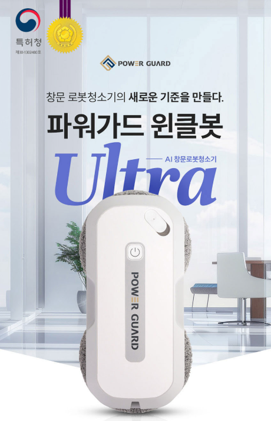
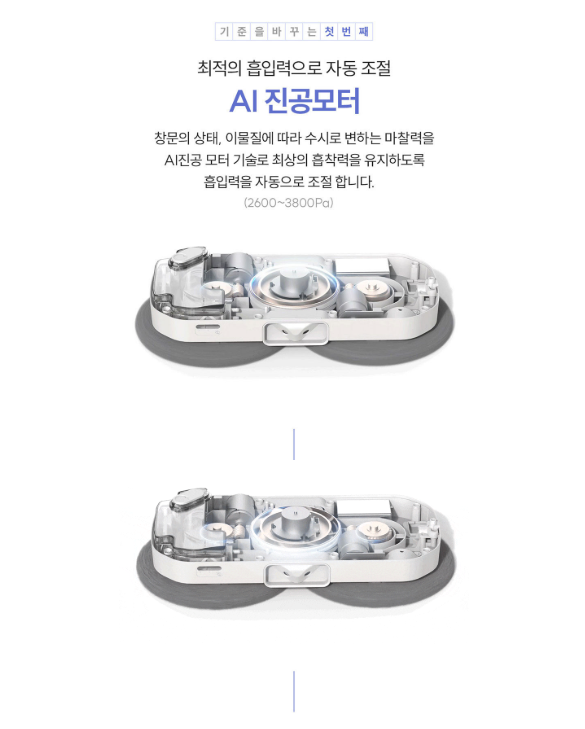

1. 파워가드 창문 로봇청소기는 어떤 제품일까?
파워가드 창문 로봇청소기는 유리창 청소 작업을 보다 편리하게 관리할 수 있도록 만들어진 창문 청소용 로봇입니다. 높은 위치의 창문이나 넓은 유리면을 청소할 때 직접 반복해서 닦는 부담을 줄이는 데 관심이 있는 분들이 살펴볼 만한 제품입니다.
2. 어떤 창문에 사용하면 좋을까?
창문 로봇청소기를 구매하기 전에는 단순히 제품 크기만 보는 것보다 실제 사용할 창문의 재질과 크기, 프레임 구조를 확인하는 것이 좋습니다. 특히 유리면의 형태나 장애물에 따라 사용 조건이 달라질 수 있으므로 제품 설명을 꼼꼼하게 확인하세요.

3. 창문 청소 방식 확인
창문 로봇청소기는 제품에 따라 청소 패드의 형태와 움직임, 작동 방식이 다를 수 있습니다. 구매 전 패드의 관리 방법과 청소 범위, 작동 시 필요한 조건을 확인하면 실제 사용 시 불편을 줄일 수 있습니다.
4. 안전 관련 조건
창문 청소용 제품은 일반적인 실내 청소기와 사용 환경이 다르기 때문에 안전 관련 구성과 사용 방법을 반드시 확인해야 합니다. 전원 연결 상태와 안전장치, 제조사가 안내하는 사용 범위를 지키는 것이 중요합니다.

5. 패드와 소모품 관리
창문 청소 후에는 청소 패드에 묻은 먼지와 오염물을 관리해야 합니다. 패드의 세척 가능 여부와 교체 주기, 추가 구매 가능 여부를 함께 확인하면 장기간 사용하는 데 도움이 됩니다.
6. 사용 전 확인사항
처음 사용할 때는 제품 설명서의 작동 방법을 확인하고 창문 상태와 제품의 부착 조건을 점검하는 것이 좋습니다. 유리면에 먼지나 오염이 심한 경우에도 제품별 권장 사용 방법을 먼저 확인하세요.
7. 구매 전 체크리스트
- 정확한 제품명과 모델을 확인합니다.
- 사용하려는 창문의 크기와 형태를 확인합니다.
- 제품의 사용 가능한 유리면 조건을 확인합니다.
- 안전장치와 전원 조건을 확인합니다.
- 청소 패드와 소모품 관리 방법을 확인합니다.
- 배송, 교환, 반품과 보증 조건을 확인합니다.
싸게살래 가전·디지털 목록에서 다양한 제품 구매 가이드를 확인할 수 있습니다.
가전·디지털 전체 상품 보기 →자주 묻는 질문
구매 전에 가장 먼저 확인할 것은 무엇인가요?
사용할 창문의 크기와 형태, 제품의 사용 조건과 안전 관련 안내를 먼저 확인하는 것이 좋습니다.
모든 창문에 사용할 수 있나요?
창문 형태와 유리면 조건에 따라 사용 가능 여부가 달라질 수 있으므로 판매처의 제품 사양과 사용 안내를 확인하세요.
청소 패드는 관리가 필요한가요?
청소 후 패드에 묻은 오염물을 관리하고 제품에서 안내하는 세척 및 교체 방법을 따르는 것이 좋습니다.